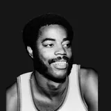

Sam Williams
Age
81
born Jan. 22, 1945
NBA seasons
2
1968-69 to 1969-70
Games
66
regular season
Per game
3.9
3.9 points · 1.8 rebounds
Life
- Born
- Jan. 22, 1945, in Detroit, Michigan
- Age
- 81 (as of Oct. 3, 2026)
- Height
- 6'8" (height and lifespan)
Teams
regular-season games| Milwaukee Bucks | 1968-69 to 1969-70 | 2 | 66 |
Age in context
- No. 116 oldest living former NBA player (list).
Still with us, born in 1945

Sam Williams is one of 29 living NBA players born in 1945.
Born the same year (1945)
Also born on January 22
Similar height
Of 81 NBA players within an inch of his height (6'8") born 1940–1950 whose outcome at 81 is known, 28.4% have reached 81. How height and lifespan line up.